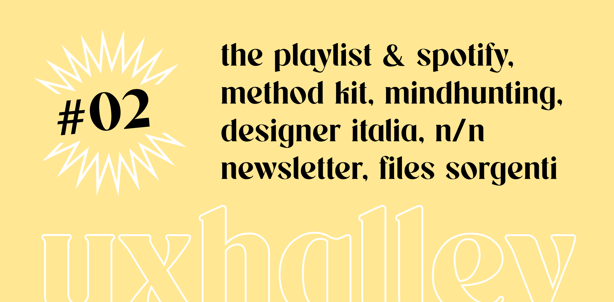

UX Halley, newsletter per designer
uxhalley, edizione #02
24 ottobre 2022 — UX Halley: una newsletter bisettimanale che raccoglie news e links utili sulla UX. Un progetto in gemellaggio con il libro The UX North Star e il file con +500 risorse chiamato UX Antimateria. Le regole sono semplici: 5 minuti di lettura per link utili e news dal mondo della UX. Se ti interessa, lo approfondisci. Se ti piace, lo condividi. Facile facile.
Immagine di copertina dell'edizione di UX Halley, newsetter per designer
Link per designer suggerito nell'edizione di UX Halley, newsletter per designer
the playlist
Personalmente credo che per chi fa UX, conoscere la storia dei grandi prodotti/business digitali, che hanno rivoluzionato, cambiato o in alcuni casi distrutto delle industrie, sia importante quanto conoscere un metodo di ricerca o come si costruisce un bottone con Figma. Beh, Netflix ha sganciato una chicca: la storia di Spotify. Non te la perdere.
Link per designer suggerito nell'edizione di UX Halley, newsletter per designer
mindhunting
Un libro che ho letteralmente divorato un paio di anni fa ma che ogni tanto mi riservo di consultare, per recuperare qualche appunto e post-it messo qua e la durante la prima lettura. Andrea Fiacchi parla in modo chiaro ma estremamente completo di temi importantissimi che legano digitale, innovazione, psicologia e metodologie, per progettare prodotti e servizi digitali partendo dalla comprensione delle persone.
Link per designer suggerito nell'edizione di UX Halley, newsletter per designer
n/n group la newsletter
Se non conosci Nielsen Norman Group devi correre immediatamente a recuperare: si tratta della bibbia del mondo della user experience, un "progetto" (blog, corsi, libri ecc) che porta il nome, tra l'altro, di due dei più grandi e influenti designer del mondo. Jakob Nielsen e Donald Norman, con il loro team, ogni settimana rilasciano una newsletter carica di contenuti utili per chi si occupa di UX e perdersela significa perdere ottime opportunità di formarsi, crescere o semplicemente di aggiornarsi.
Link per designer suggerito nell'edizione di UX Halley, newsletter per designer
la cassazione si è pronunciata
Argomento ostico e spesso causa di lotte tra fornitori e clienti, in special modo per ambienti come il visual, il branding e il graphic design che hanno molto spesso dei file sorgente "separati" da quello che è poi effettivamente il delivery. Parliamo della risposta alla fatidica domanda: i sorgenti, si pagano? La cassazione si è pronunciata in secondo appello in merito ad una diatriba tra un'azienda e un fornitore, dando delle risposte specifiche per il caso che, probabilmente, detteranno la linea guida per i futuri casi simili.
Link per designer suggerito nell'edizione di UX Halley, newsletter per designer
duolingo brand guidelines
Ti starai chiedendo perché questo link qui dentro, d'altronde è una newsletter che dovrebbe parlare di UX! Il motivo è semplice: credo che saper cogliere le sfumature, le motivazioni, i perché e i "come" dietro alcune scelte di grandi brand, sia alla base della ricerca e formazione di fondo che ogni designer dovrebbe avere. Duolingo ha rilasciato, non ora ma tempo fa, le sue linee guida di design (relative al brand) ma che impattano su tantissimi temi anche di UX (come esempio il TOV, il tipo di scrittura).
Link per designer suggerito nell'edizione di UX Halley, newsletter per designer
method kit
Per chi, come me, è amante (e quasi feticista, posso dirlo?) degli oggetti cartacei o di strumenti come carte, libricini, giochi, questo è il sito che può davvero creare dei problemi economici. Decine e decine di mazzi di carte per qualsiasi caso d'uso, dalla progettazione di workshop al service design, passando anche per cose come personal branding o metodi di apprendimento/memorizzazione.
Link per designer suggerito nell'edizione di UX Halley, newsletter per designer
privacy by design kit
Il team di design dell'AGID - Agenzia per l'Italia Digitale, ovvero Designer Italia, ha rilasciato uno strumento che deve, e sottolineo "deve", essere assolutamente nella cassetta degli attrezzi di ogni persona che fa design e si occupa di progettazione. Un kit, completo di documenti, modelli, know how e tutto il necessario, per progettare prodotti e servizi digitali che siano rispettosi della privacy delle persone e che siano anche legali e aderenti alle norme GDPR di privacy by design.